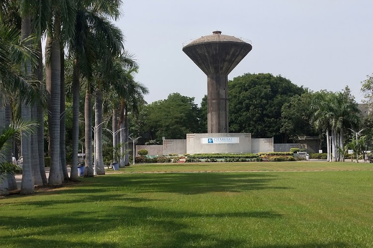

About Us
Charotar University of Science and Technology (CHARUSAT), founded in 2009 and located in Changa–Anand, Gujarat, is a NAAC A+ and UGC‑approved private university offering 72+ programs across 9 institutes under 6 faculties, with around 7,500 students and 550 staff.
Our Journey
Initiated in 2000 as a single institute on Education Campus, Changa, CHARUSAT has rapidly grown into a full-fledged university with diverse faculties—Engineering, Pharmacy, Management, Sciences, Computer Applications, Nursing & Physiotherapy—and a strong focus on research, student welfare, and innovation.
Highlights
- 🅠Accreditation & Rankings: NAAC A+ Grade; Ranked among India’s top 200 universities by NIRF.
- 🌿 Green Campus: Spread across 125+ acres with lush greenery, gardens, and modern labs.
- 📠Student Community: Vibrant clubs, sports, and cultural programs; strong international student presence.
- 🤠Industry & Research: Home to innovation centers, labs, and active partnerships preparing students as job creators.
Campus Life Snapshots
